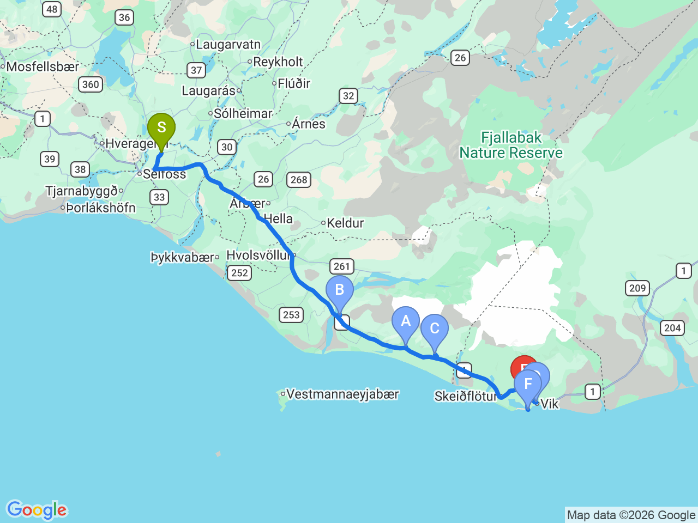

Day 08 · 2026-08-23（日）
冰島環島 Day 3/11
南岸經典瀑布之旅：塞里雅蘭・斯科加爾・維克黑沙灘
冰島南岸最經典路線，一次串聯兩大瀑布、維克小鎮與黑沙灘奇景

行程明細DAY 08
| 時間 | 地點 | 地點 (英文) | 價格 | 預計停留(分鐘) | 備註 |
|---|---|---|---|---|---|
| 08:30 | 飯店出發 | 沿 1 號公路往南岸前進 | |||
| 09:30 | 托瓦德塞里遊客中心 | AÞorvaldseyri Visitor Centre | 免費 | 30–45 | 位於艾雅法拉火山（Eyjafjallajökull）山腳下，展示 2010 年火山爆發紀錄與影片，可遠眺冰川與火山 |
| 10:20 | 塞里雅蘭瀑布 | BSeljalandsfoss | 1000 | 45–60 | 冰島最著名瀑布之一，可沿步道走到瀑布後方欣賞，是南岸必訪景點 |
| 11:40 | 斯科加爾瀑布 | CSkógafoss | 1000 | 45–60 | 落差約 60 公尺的大型瀑布，可近距離欣賞或登上觀景平台俯瞰南岸風景 |
| 13:10 | 維克教堂 | DVík i Myrdal Church | 免費 | 15–20 | 維克小鎮地標，白色教堂座落山丘，可俯瞰整個維克鎮與黑沙灘海岸 |
| 13:40 | 哈爾薩內夫謝利爾玄武岩洞 | FHálsanefshellir | 1000 | 30–45 | 位於 Reynisfjara 黑沙灘旁，以壯觀玄武岩柱、海蝕洞及海蝕柱聞名，是南岸最具代表性的自然景觀之一 |
| 15:00 | 抵達 The Barn Hostel Check-in |
每日三餐
早餐
未安排
午餐
未安排
南岸路線中段解決，餐廳尚未確認
晚餐
未安排
The Barn 附近解決，餐廳尚未確認
住宿資訊
本日預估開車里程
152km
Country Dream（Selfoss）→ Þorvaldseyri 55km → Seljalandsfoss 15km → Skógafoss 30km → Vík 34km → Reynisfjara 11km → The Barn 7km
該區域加油站
- N1 Vík維克小鎮，南岸路線重要補給點